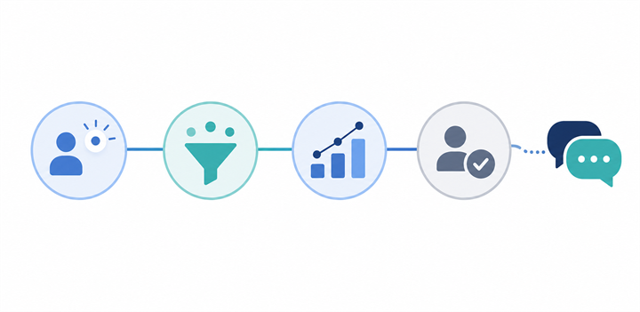

マーケティングの成果が見えないときは、指標の片寄りを疑ってみる
みなさんこんにちは、Valorize AIの斎藤です。
マーケティング施策に取り組んでいるのに、成果を説明しにくい。
問い合わせ数は見ている。リード数も見ている。売上ももちろん見ている。
それでも、経営会議では「結局、この施策は続けるべきなのか」が話しにくく、営業からは「リードの質が分からない」と言われてしまう。
こういう状態は、意外と珍しくありません。
このとき、最初に考えたくなるのは「施策が足りないのではないか」ということです。広告を増やす、資料を増やす、展示会に出る、セミナーを開く。もちろん、施策を増やすことが必要な場面もあります。
ただ、施策を増やす前に見たいことがあります。
それは、今見ている数字が、次の判断に変わっているかどうかです。
今回は、BtoBマーケティングの成果が見えにくい状態を、「指標の片寄り」という観点から考えてみます。
成果が見えないのは、数字が足りないからとは限らない
マーケティングの成果が見えないと聞くと、数字が取れていない状態を想像しやすいかもしれません。
しかし実際には、数字はあるのに判断できない、というケースがよくあります。
たとえば、問い合わせ数は増えている。でも、その問い合わせが狙いたい顧客から来ているのかは分からない。リード数は増えている。でも、営業が追うべき相手なのかは分からない。売上は見えている。でも、どの施策が効いたのか、どこを直せばよいのかまでは分からない。
つまり問題は、数字がないことではなく、数字が判断材料になっていないことです。
マーケティングでは、売上、問い合わせ数、リード数のように分かりやすい数字ほど注目されます。これらは大事です。見なくてよい数字ではありません。
ただ、その数字だけで施策の良し悪しを決めようとすると、話が粗くなります。
施策が悪いのか。届ける顧客像がずれているのか。検討段階が浅いのか。営業に渡る情報が足りないのか。これらは、本来は分けて考えるべき論点です。
成果が見えないときに最初に疑うべきなのは、施策の量だけではなく、見ている数字が次の判断に変わっているかどうかです。
売上だけを見ると、マーケティングは短期評価に寄りすぎる
売上は、最終的にとても重要な数字です。
どれだけ認知が広がっても、どれだけリードが増えても、事業として売上につながらなければ、マーケティング投資を続ける判断は難しくなります。
一方で、売上だけでマーケティングを評価すると、判断が短期に寄りやすくなります。
今月の売上が上がったから良い施策。今月の売上が上がらなかったから悪い施策。こう見てしまうと、途中で起きている変化が見えにくくなります。
たとえば、これまで接点がなかった業界から問い合わせが増えている。既存顧客に近い企業から資料請求が来ている。営業が話しやすい課題感を持ったリードが増えている。こうした変化は、すぐに売上へ反映されないことがあります。
それでも、次の投資判断や施策改善には重要な材料です。
マクロミルのBtoBマーケティング施策に関する調査では、2026年3月にBtoB事業の担当者・決裁者744名を対象に調査が行われ、予算横ばい企業が管理するKPIは平均2.2個、予算増加企業は平均3.1個とされています。
もちろん、これは「KPIを増やせば予算が増える」という話ではありません。見る数字を増やせば成果が出る、という単純な話でもありません。
大事なのは、売上以外の途中の変化を見ていないと、投資を続ける理由も、見直す理由も説明しにくくなるということです。
売上は最終的に見るべき数字ですが、売上だけでは、今のマーケティング活動を続けるべきか、直すべきか、どこを直すべきかまでは判断しにくいのです。
問い合わせ数やリード数だけを見ると、入口評価で止まってしまう
売上だけでは短期評価に寄りすぎる。では、問い合わせ数やリード数を見れば十分でしょうか。
これも、そう単純ではありません。
問い合わせ数やリード数は、マーケティング施策の入口を測るうえで大切な数字です。施策がまったく反応を生んでいないのか、一定の接点を作れているのかを確認できます。
ただ、入口の数字だけを見ると、「増えたか、減ったか」で評価が止まりやすくなります。
リード数が増えていても、狙った顧客層とずれているかもしれません。情報収集段階の人ばかりで、今すぐ商談に進む状態ではないかもしれません。営業が連絡したときに、何を話せばよいのか分かる情報が残っていないかもしれません。
この状態でリード数だけを追うと、マーケティング側は「成果が出ている」と感じ、営業側は「追いにくい」と感じます。どちらかが間違っているというより、見ている指標が入口に偏っているのです。
BtoB SaaSのリード獲得領域でも、リード数だけでなく、商談化率、MQL、SQL、ICP、検討フェーズなどを組み合わせて見る考え方があります。これらの用語を細かく覚えることが目的ではありません。
見るべきなのは、入口で生まれた接点が、次の判断に進める状態なのかということです。
リード数が増えたかどうかだけではなく、そのリードがどの顧客像に近く、どの検討段階にいて、営業判断に使える状態かまで見ないと、入口の数字は次の判断につながりません。
営業とのずれは、追っている数字と使いたい材料のずれから生まれる
マーケティングと営業の連携がうまくいかないとき、よく「コミュニケーション不足」と言われます。
もちろん、会話の量が足りないこともあります。営業からのフィードバックが返ってこない。マーケティング側の意図が営業に伝わっていない。こうした問題は実際に起きます。
ただ、連携課題を会議の回数だけで見ると、別の問題を見落としやすくなります。
それは、マーケティングが追っている数字と、営業が使いたい材料の粒度がずれていることです。
マーケティング側は、リード数、問い合わせ数、資料請求数、広告の反応などを見ています。一方で営業側は、この会社を今追うべきか、何に困っていそうか、誰と話すべきか、どの切り口で会話を始めるべきかを知りたい。
つまり、営業が欲しいのは単なる件数ではなく、次の会話や優先順位を決めるための判断材料です。
ワンマーケティングの調査を紹介したITmediaの記事では、B2B企業の営業職・マーケティング職500人を対象にした調査で、マーケティング側の64.6%、営業側の73.9%が営業とマーケティングの連携に課題を感じているとされています。
この数字を、単に「部門間の仲が悪い」と読む必要はありません。むしろ、双方が見ている情報や判断したいことがずれている可能性を見るべきだと思います。
営業とマーケティングの連携を良くするには、会議を増やすだけでなく、マーケティングの数字が営業の判断材料として使える粒度になっているかを見る必要があります。
見るべきなのは、KPIの数ではなく判断につながる流れ
ここまで読むと、「では、もっと多くのKPIを追えばよいのか」と感じるかもしれません。
でも、私が言いたいのは、KPIをたくさん並べましょうという話ではありません。
むしろ、数字を増やしすぎると、今度は何を見ればよいのか分からなくなります。ダッシュボードは細かいのに、会議では結局「で、どうするのか」が決まらない。これでは本末転倒です。
必要なのは、入口、途中、出口、営業接続を分けて、どの数字がどの判断につながるのかを見ることです。
入口では、どの顧客層から反応が来ているのか。途中では、検討段階や関心テーマがどう変わっているのか。出口では、売上や受注にどうつながっているのか。営業接続では、営業が追うべき相手や話すべき論点が見えているのか。

この流れで見ると、施策を増やすべきなのか、訴求を変えるべきなのか、顧客像を見直すべきなのか、営業に渡す情報を変えるべきなのかが少しずつ分かれてきます。
マーケティングの成果が見えないとき、問題は「頑張っていないこと」ではないかもしれません。すでに多くの施策に取り組んでいる会社ほど、数字はあるのに判断できない状態になりやすいものです。
だからこそ、施策を増やす前に、今見ている指標が何の判断につながっているのかを整理することが大切です。
マーケティング指標は、たくさん並べるためではなく、次に何を判断するかを明らかにするために整理するものです。
もし、自社のマーケティング活動でも同じような課題を感じている場合は、まず現状を整理するところからお手伝いできますので、お気軽にご連絡ください！
https://valorize-ai.com/